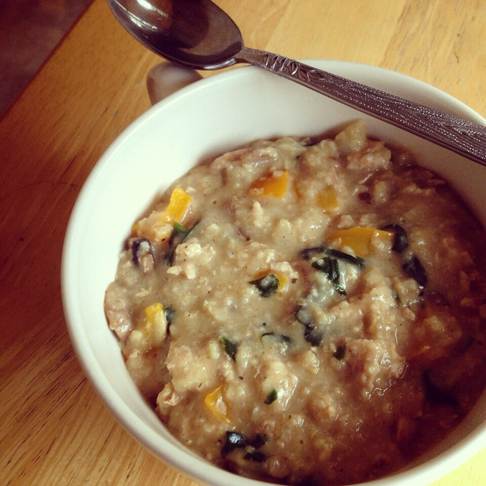

Savory Oatmeal
Savory oatmeal can sound really weird at first. The first time I heard of it I wasn't impressed. Meh. BUT. It is shockingly delicious when you try it. It's always such a nice change when I make it. I like it because you can use whatever vegetables and/or meat you're in the mood for. Or just need to use up before it goes bad, ha. This recipe is going to be for the pictured oatmeal, but you can change the vegetables/meat for whatever you personally like!

Savory OatmealServes: 1
- 4 oz lean ground turkey
- 1.5 cups no salt added chicken broth
- 1/3 cup old-fashioned oats
- 1/2 cup "riced" cauliflower (raw cauli, processed in a food processor)
- 1/3 cup chopped orange bell pepper
- 1/3 cup sliced mushrooms
- 1 tsp mesquite seasoning
- 2 handfuls of spinach
- Huge spoonful of plain greek yogurt (Optional)
In a pan sprayed with nonstick spray or coated in oil, sautee the lean ground turkey (or desired meat) until lightly browned and fully cooked. In a medium pot, add the cooked turkey to the broth, oats, "riced" cauliflower, orange bell pepper, mushrooms, and mesquite seasoning. Let this cook down for a while on a medium heat, stirring often. Once the liquid is nearly gone, add in 2 handfuls of spinach and stir until it is wilted. Then it's done! You can add in a huge spoonful or two or plain greek yogurt to make it extra creamy. I prefer to :)Savory oats are amazing when you top then with a runny fried egg, avocado, or salsa! I seriously seriously recommend it. Enjoy!